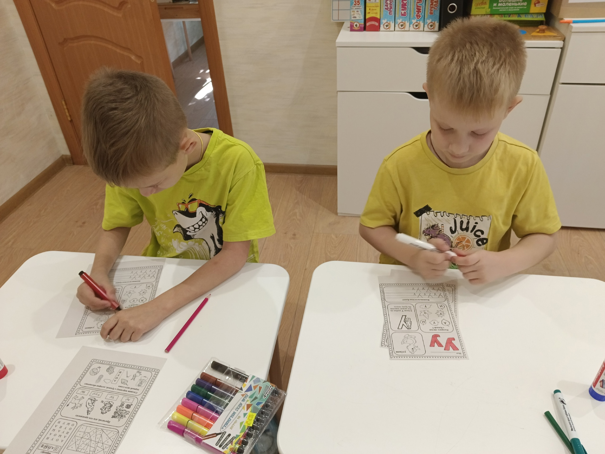
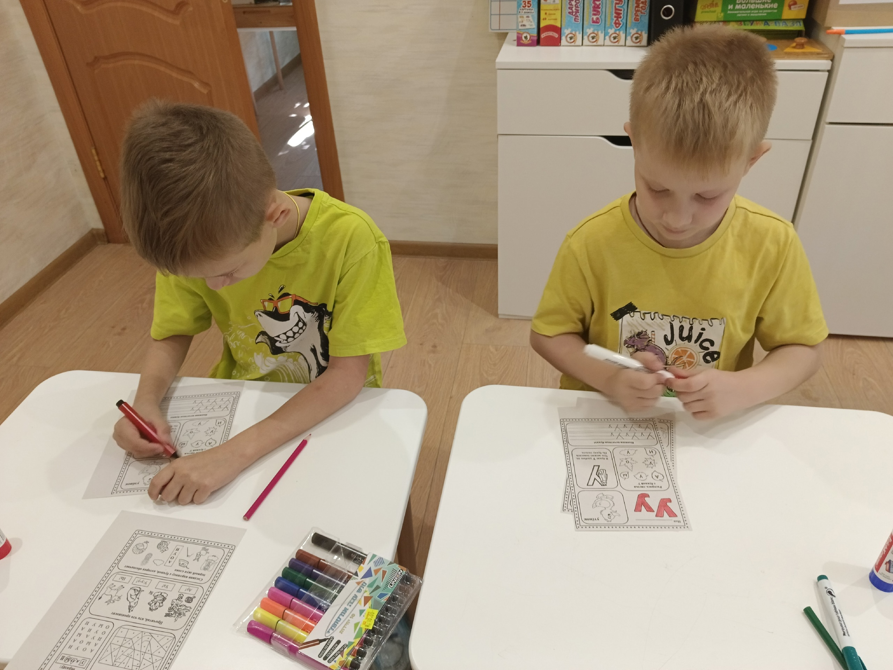

Рады приветствовать вас в нашем детском центре "Развитие"!
Здесь ваши юные таланты могут раскрыться под чутким руководством опытных специалистов:
• Логопед поможет развить речь и преодолеть речевые трудности.
• Дефектолог окажет индивидуальную помощь в развитии познавательных способностей и преодолении трудностей в обучении.
• Иппотерапевт откроет мир конной терапии, способствуя развитию координации, моторики и эмоционального интеллекта.
Доверьте развитие своих детей профессионалам!
Чем мы можем быть Вам полезны?
Развитие вашего ребенка – наша главная задача!
В нашем центре мы предлагаем комплексный подход к развитию детей, включающий:
Речевое развитие:
Диагностика уровня речевого развития:
точная оценка речевых навыков вашего ребенка.
Формирование словаря:
расширение словарного запаса и обогащение речи.
Формирование грамматического строя речи:
правильное построение фраз и использование грамматических правил.
Звуковая культура речи:
развитие правильного произношения звуков.
Связная речь:
развитие навыков ведения диалога и составления рассказа.
Подготовка к школе:
развитие навыков, необходимых для успешного обучения в школе.
Дефектологическое обследование:
Комплексная оценка развития:
определение высших психичиских функций в соответствии возрасту ребенка.
Анализ навыков общения:
умение вступать в контакт, сведение о себе, понимание обращенной речи.
Уровень общей осведомленности:
знание окружающего мира.
Графомоторные навыки:
определение ведущей руки, развитие маторики кистей и пальцев рук.
Пространственно-временные понятия и отношение:
о части суток, временах года, определение левой и правой стороны тела.
Сенсорное развитие:
определение цвета, формы, величины предметов.
Подготовка к школе:
развитие навыков, необходимых для успешного обучения в школе.
 


Отзывы:
Общение прошло на полном взаимопонимании. С ребёнком общение- работа-занятия на результат выстроены доброжелательно с терпением, с желанием помочь и ребёнку и родителям в решении их запроса. Для процесса обучения - занятий всё достойно и граммотно организовано, много спец обучающего-развивающего материала. Всё направлено на достижение должного желаемого результата.
Хороший специалист, знающий своё дело. Всё доступно,понятно,продуктивно. Разобрали всё до мелочей,составила план работы. Очень внимательная ,дала массу полезных советов. Сумела расположить к себе дочку,видно,что хочет помочь моему ребёнку, что очень ценно. На занятиях подготавливает много интересных материалов,оставляет домашнее задание,что в нашем случае очень здорово, так как порой не хватает фантазии,чем бы позаниматься в плане учебной деятельности. Будем дальше заниматься. Всё нравится.
Огромная благодарность Виолетте Семеновне за профессионализм и комплексный подход к развитию ребенка. С первой же консультации педагог нашла подход к ребенку, сын бежит на занятия с удовольствием. Занятия разносторонние, все в игровой форме, Виолетта Семёновна после каждого занятия рассказывает о том, что стало получаться, что нужно потренировать, предоставляет необходимые материалы.